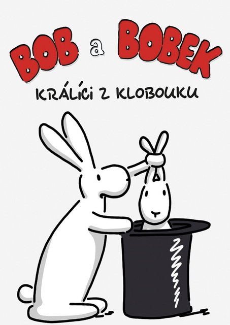

Bob a Bobek - králíci z klobouku je seriál o mnoha dílech.
Seriál je o dvou králících cestujících v kouzelném klobouku kouzelníka Pokustóna. Na své cestě králíci zažívají spoustu dobrodružství.
| Jmeno | Schopnosti | ||
|---|---|---|---|
| Bob | Síla | Další síla | |
| Bobek | Chytrost | Nápaditost | |
Nejhlavnějšími částmi příběhu jsou: